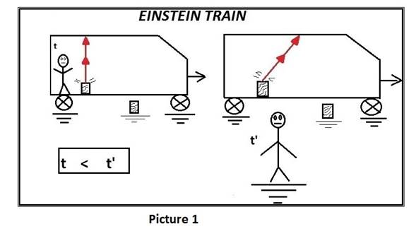
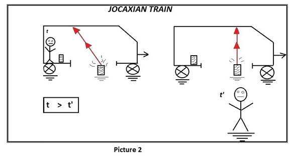

O Trem
Jocaxiano
Joao Carlos Holland de
Barcellos
Resumo: Este artigo mostra duas situações bastante
simples e análogas em relação ao experimento mental clássico conhecido como o
'Trem de Einstein', que explica a dilatação temporal no âmbito da teoria da
relatividade especial, e depois aponta uma contradição lógica entre as duas.
O Trem de Einstein
É familiar a todo
estudante de teoria da relatividade restrita a experiência mental que mostra a
dilatação temporal ocorrendo quando se postula a invariância da medida da
velocidade da luz[1,2,3].

Podemos ver,
nestes exemplos clássicos, que o observador que vê o feixe de luz ir e voltar
pelo mesmo caminho em seu referencial, isto é, quando a fonte de luz está
parada em relação a si mesmo,
(nestes exemplos
o observador que se encontra dentro do vagão onde também se encontra a fonte de
luz) ele calcula um tempo menor para o percurso da luz do que é calculado pelo observador
que observa a luz fazendo um trajeto mais longo.
Por esta razão se
diz que o relógio do observador cuja fonte de luz está em repouso em relação a
ele (no vagão),anda mais devagar do que o relógio do observador
da estação, que observa a fonte de luz em movimento dentro do vagão medindo,
portanto, um percurso maior no trajeto da luz. Assim, para que a velocidade da
luz seja a mesma (=c) o tempo também deve ser maior no observador que mede um
percurso maior no trajeto da luz.
Este Fenômeno é
conhecido como "dilatação temporal". Portanto, sofre a ‘dilatação
temporal’ quem observa a luz fazer o menor caminho, em nosso exemplo, quem está
dentro do trem em movimento, com a fonte de luz em repouso em relação a si
próprio.
Tudo muito
didático e simples. Eis que então surge o “Trem Jocaxiano”.
O Trem Jocaxiano
O ‘trem jocaxiano’ (TJ) nada mais eh que o
velho ‘Trem de Einstein’ com um belo furo no chão! Também acrescentamos no chão
da estação, perto dos trilhos, uma fonte de luz (igual a que existia dentro do
vagão do exemplo anterior).

Quando o trem
passa, a fonte de luz, parada no solo da estação, emite um feixe de luz, que
passa através do furo no chão do trem, e entra no trem em movimento bate no
teto espelhado do trem e volta para a mesma lanterna que emitiu o feixe, no
solo.
Ou seja, quando o
TJ passa, a luz entra pelo furo bate no teto e volta pra lanterna fazendo um
vai e volta semelhante ao Trem de Einstein, mas agora, quem está na estação é
que observa a
luz ir e voltar pelo mesmo caminho (o caminho mais curto!).
Já para o
observador que está no vagão em movimento o feixe de luz faz um percurso mais
longo, como uma parte de um "triângulo".
Ou seja, neste TJ,
quem está no vagão em movimento observa um caminho *maior* do feixe de luz do
que o observador parado na estação.
Portanto, como os
dois observadores devem medir a mesma velocidade para a luz, o tempo, dentro
deste TJ, passa mais rápido do que para o observador que está parado na
estação e vê a luz fazer o menor caminho!
Assim, neste
caso, sofre dilatação temporal quem está fora do trem, o observador em repouso
na estação.
Isto é, o tempo
passa mais rápido para o observador no trem em movimento: aquele que observa a
luz fazer um caminho mais longo.
Paradoxo
Portanto, este
experimento mental mostra que temos um paradoxo na relatividade restrita, pois
o mesmo trem físico, os mesmos observadores, sofrem uma dilatação temporal que
depende de onde parte a luz, se de dentro do trem (quando a fonte está
caminhando com o trem) ou fora dele (quando a fonte está parada na estação)!?!
Referencias:
[0] Versão publicada em Inglês:
https://www.omicsonline.com/open-access/jocaxians-train-2476-2296-1000154.php?aid=88262
[1]- truck
https://www.youtube.com/watch?v=M3Qn4AnaSIc
[2]-
http://acervo.novaescola.org.br/ciencias/fundamentos/einstein-teoria-relatividade-dilatacao-do-tempo-605460.shtml
[3]-
http://www.infoescola.com/fisica/dilatacao-do-tempo/
[4]-http://alunosonline.uol.com.br/fisica/dilatacao-do-tempo.html
[5]-O Paradoxo das Gemeas:
https://social.stoa.usp.br/paradoxosrelat/blog/paradoxo-das-gemeas
[6]-O Paradoxo dos gêmeos jocaxianos
https://social.stoa.usp.br/paradoxosrelat/blog/o-paradoxo-dos-gemeos-jocaxianos
(*)mail:jocaxx@gmail.com